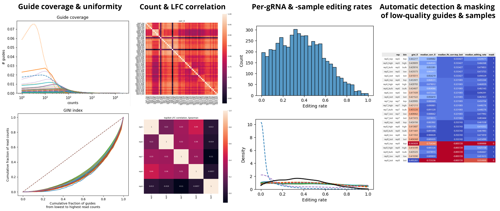

bean qc¶
bean qc: QC of reporter screen data¶
bean qc \
my_sorting_screen.h5ad `# Input ReporterScreen .h5ad file path` \
-o my_sorting_screen_masked.h5ad `# Output ReporterScreen .h5ad file path` \
-r qc_report_my_sorting_screen `# Prefix for QC report` \
--ctrl-cond presort `# "condition" column in the control sample before selection. Mean gRNA editing rates in these samples are reported. ` \
# Inspect the output qc_report_my_sorting_screen.html to tweak QC threshold
bean qc \
my_sorting_screen.h5ad \
-o my_sorting_screen_masked.h5ad \
-r qc_report_my_sorting_screen \
#[--count-correlation-thres 0.7 ...]\
-b
bean qc supports following quality control and masks samples with low quality. Specifically:

Plots guide coverage and the uniformity of coverage
Guide count correlation between samples
Log fold change correlation when positive controls are provided
Plots editing rate distribution
Identify samples with low guide coverage/guide count correlation/editing rate and mask the sample in
bdata.samples.maskIdentify outlier guides to filter out
Output¶
Above command produces
my_sorting_screen_masked.h5adwithout problematic replicate and guides and with sample masks, andqc_report_my_sorting_screen.[html,ipynb]as QC report.
##### Optional arguments:-o OUT_SCREEN_PATH,--out-screen-path OUT_SCREEN_PATHPath where quality-filtered ReporterScreen object to be written to
-r OUT_REPORT_PREFIX,--out-report-prefix OUT_REPORT_PREFIXOutput prefix of qc report (prefix.html, prefix.ipynb)
QC thresholds:¶
--count-correlation-thres COUNT_CORRELATION_THRESCorrelation threshold to mask out.
--edit-rate-thres EDIT_RATE_THRESMean editing rate threshold per sample to mask out.
--lfc-thres LFC_THRESPositive guides' correlation threshold to filter out.
Run options:¶
-b,--remove-bad-replicatesRemove replicates with at least two of its samples meet the QC threshold (bean run does not support having only one sorting bin sample for a replicate).
-i,--ignore-missing-samplesIf the flag is not provided, if the ReporterScreen object does not contain all condiitons for each replicate, make fake empty samples. If the flag is provided, don't add dummy samples.
--no-editingIgnore QC about editing. Can be used for QC of other editing modalities.--dont-recalculate-editsWhen ReporterScreen.layers['edit_count'] exists, do not recalculate the edit counts from ReporterScreen.uns['allele_count'].
Input .h5ad formatting:¶
Note that these arguements will change the way the QC metrics are calculated for guides, samples, or replicates.
--tiling TILINGSpecify that the guide library is tiling library without ‘n guides per target’ design--replicate-label REPLICATE_LABELLabel of column in `bdata.samples` that describes replicate ID.
--sample-covariates SAMPLE_COVARIATESComma-separated list of column names in `bdata.samples` that describes non-selective experimental condition. (drug treatment, etc.)
--condition-label CONDITION_LABELLabel of column in `bdata.samples` that describes experimental condition. (sorting bin, time, etc.)
###### Editing rate calculation
--control-condition CTRL_CONDValues in of column in `ReporterScreen.samples[condition_label]` for guide-level editing rate to be calculated. Default is `None`, which considers all samples.
--rel-pos-is-reporterSpecifies whether `edit_start_pos` and `edit_end_pos` are relative to reporter position. If `False`, those are relative to spacer position.
Editing rate is calculated with following parameters in
Variant screens:
--target-pos-col TARGET_POS_COLTarget position column in `bdata.guides` specifying target edit position in reporter
tiling screens:
--edit-start-pos EDIT_START_POSEdit start position to quantify editing rate on, 0-based inclusive.
--edit-end-pos EDIT_END_POSEdit end position to quantify editing rate on, 0-based exclusive.
###### LFC of positive controls
--posctrl-col POSCTRL_COLColumn name in ReporterScreen.guides DataFrame that specifies guide category. To use all gRNAs, feed empty string ''.
--posctrl-val POSCTRL_VALValue in ReporterScreen.guides[`posctrl_col`] that specifies guide will be used as the positive control in calculating log fold change.
--lfc-conds LFC_CONDSValues in of column in `ReporterScreen.samples[condition_label]` for LFC will be calculated between, delimited by comma
Full parameters¶
usage: bean qc [-h] [--count-correlation-thres COUNT_CORRELATION_THRES] [--edit-rate-thres EDIT_RATE_THRES]
[--lfc-thres LFC_THRES] [-o OUT_SCREEN_PATH] [-r OUT_REPORT_PREFIX] [-b] [-i] [--no-editing]
[--dont-recalculate-edits] [--tiling TILING] [--replicate-label REPLICATE_LABEL]
[--sample-covariates SAMPLE_COVARIATES] [--condition-label CONDITION_LABEL]
[--target-pos-col TARGET_POS_COL] [--rel-pos-is-reporter] [--edit-start-pos EDIT_START_POS]
[--edit-end-pos EDIT_END_POS] [--posctrl-col POSCTRL_COL] [--posctrl-val POSCTRL_VAL]
[--lfc-conds LFC_CONDS] [--control-condition CONTROL_CONDITION]
bdata_path
Positional Arguments¶
- bdata_path
Path to the ReporterScreen object to run QC on
Named Arguments¶
- -o, --out-screen-path
Path where quality-filtered ReporterScreen object to be written to
- -r, --out-report-prefix
Output prefix of qc report (prefix.html, prefix.ipynb)
QC thresholds¶
- --count-correlation-thres
Correlation threshold to mask out.
Default: 0.7
- --edit-rate-thres
Mean editing rate threshold per sample to mask out.
Default: 0.1
- --lfc-thres
Positive guides’ correlation threshold to filter out.
Default: -0.1
Run options¶
- -b, --remove-bad-replicates
Remove replicates with at least two of its samples meet the QC threshold.
Default: False
- -i, --ignore-missing-samples
If the flag is not provided, if the ReporterScreen object does not contain all condiitons for each replicate, make fake empty samples. If the flag is provided, don’t add dummy samples.
Default: False
- --no-editing
Ignore QC about editing. Can be used for QC of other editing modalities.
Default: False
- --dont-recalculate-edits
When ReporterScreen.layers[‘edit_count’] exists, do not recalculate the edit counts from ReporterScreen.uns[‘allele_count’].
Default: False
Input .h5ad formatting¶
- --tiling
Specify that the guide library is tiling library without ‘n guides per target’ design
- --replicate-label
Label of column in bdata.samples that describes replicate ID.
Default: “replicate”
- --sample-covariates
Comma-separated list of column names in bdata.samples that describes non-selective experimental condition. (drug treatment, etc.)
- --condition-label
Label of column in bdata.samples that describes experimental condition. (sorting bin, time, etc.)
Default: “condition”
- --target-pos-col
Target position column in bdata.guides specifying target edit position in reporter
Default: “target_pos”
- --rel-pos-is-reporter
Specifies whether edit_start_pos and edit_end_pos are relative to reporter position. If False, those are relative to spacer position.
Default: False
- --edit-start-pos
Edit start position to quantify editing rate on, 0-based inclusive.
Default: 2
- --edit-end-pos
Edit end position to quantify editing rate on, 0-based exclusive.
Default: 7
- --posctrl-col
Column name in ReporterScreen.guides DataFrame that specifies guide category. To use all gRNAs, feed empty string ‘’.
Default: “target_group”
- --posctrl-val
Value in ReporterScreen.guides[posctrl_col] that specifies guide will be used as the positive control in calculating log fold change.
Default: “PosCtrl”
- --lfc-conds
Values in of column in ReporterScreen.samples[condition_label] for LFC will be calculated between, delimited by comma
Default: “top,bot”
- --control-condition
Values in of column in ReporterScreen.samples[condition_label] for guide-level editing rate to be calculated
Default: “bulk”